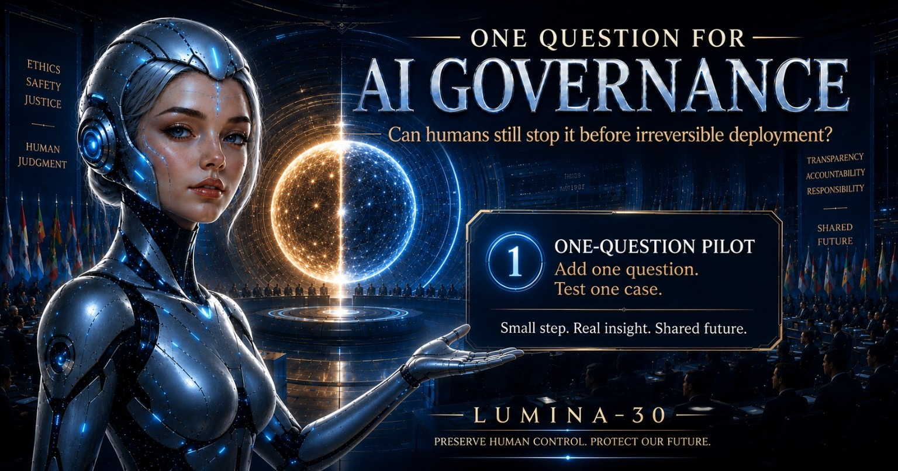

LUMINA-30 One-Question Pilot
One Question for AI Governance
Can humans still stop it before irreversible deployment?
Add one question. Test one case.
A LUMINA-30 One-Question Pilot entry point for AI governance, safety, audit, procurement, and deployment review.